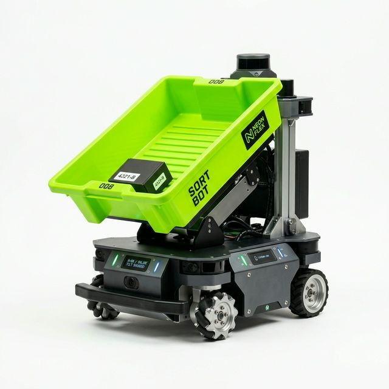
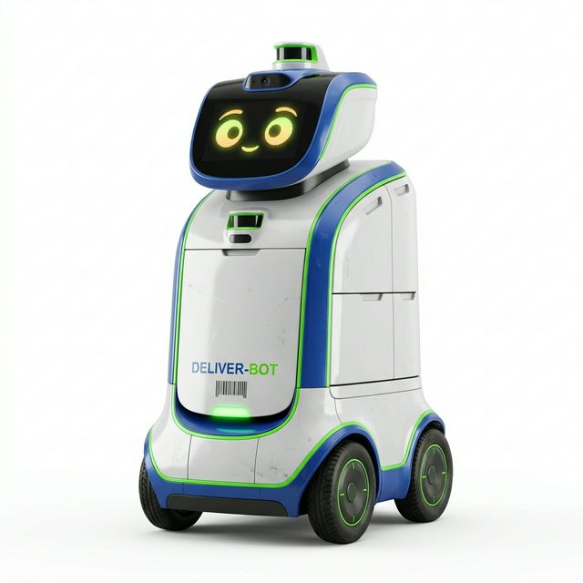

COBOT-AMR Sort
물류 창고의 입/출고 효율을 극대화하는 민첩한 풀필먼트 소터(Sorter) 결합형 저상 모빌리티 로봇입니다.
| 탑재 틸팅 방식 | 360도 회전 배출 트레이 |
|---|---|
| 시속 / 충돌 반경 | 15 km/h (± 5cm 초근접 주행) |
거대한 창고부터 붐비는 식당까지, 어디든 인간의 동선을 침해하지 않고 자연스럽게 스며드는 지능형 자율주행 모빌리티 라인업. 공장 라인의 풀필먼트 물류와 서비스업 전반의 구조적 혁신을 불러일으킵니다.
장애물을 회피하고 스스로 지도를 구축하는 AMR 기술의 정점입니다.
QR 코드나 바닥 테이핑 공사 없이도 무선 제어망(ACS)을 통해 수백 대의 로봇군(Swarm)이 동시 교차 주행하며 택배 상자 및 하물을 입/출고 소팅(Sorting)합니다. 인건비 80% 감축 효과를 낳습니다.
국물 요리를 흘리지 않는 특수 서스펜션과 고해상도 AI 감정 터치스크린이 결합되어 호텔, 백화점 라운지, 병원 병동 간 식약품 운반에 친근하고 스마트하게 투입됩니다. 아이들이 다가와도 즉시 멈추는 방어 체계를 갖추었습니다.

물류 창고의 입/출고 효율을 극대화하는 민첩한 풀필먼트 소터(Sorter) 결합형 저상 모빌리티 로봇입니다.
| 탑재 틸팅 방식 | 360도 회전 배출 트레이 |
|---|---|
| 시속 / 충돌 반경 | 15 km/h (± 5cm 초근접 주행) |

호스피탈리티 인공지능이 결합하여 사람과 대화하고 목적지까지 안내 / 물건 배송 임무를 수행하는 F&B 특화 서비스 봇입니다.
| 선반 모듈 하중 | 10 kg (최대 4단 선반 장착) |
|---|---|
| 인터페이스 표정 | 10.2 인치 멀티 터치 Voice AI |